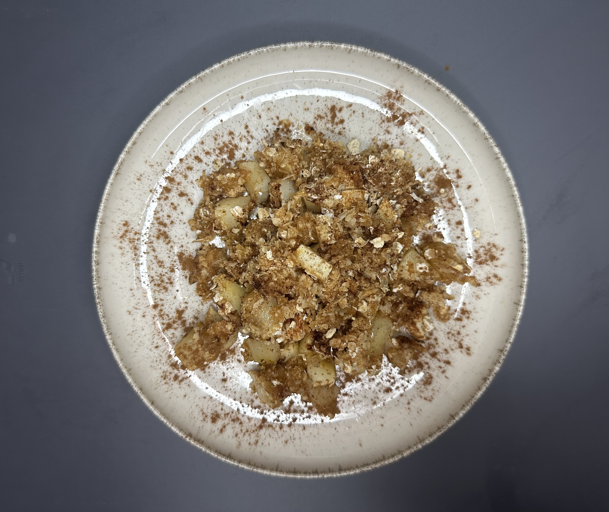

Couscous Salade
1-2 personen Duur: 25 minuten
Ontdek onze heerlijke collectie duurzame recepten, gebaseerd op biologische en lokale producten die in het seizoen zijn. Wij geloven dat lekker eten en milieuvriendelijkheid hand in hand kunnen gaan. Onze recepten zijn zorgvuldig samengesteld om smaak en duurzaamheid te combineren, zodat u kunt genieten van smakelijke gerechten terwijl u de planeet helpt beschermen. Door seizoensgebonden, lokale ingrediënten te gebruiken, verminderen we transportkosten en ondersteunen we de gemeenschap. Ga op culinaire reis en ontdek hoe eenvoudige keuzes in de keuken een groot verschil kunnen maken voor het milieu.
1-2 personen Duur: 25 minuten
Kook de bio couscous volgens de aanwijzingen op de verpakking. Snijd de biologische groenten en meng ze met de gekookte couscous en fetakaas. Besprenkel met biologische olijfolie, citroensap en gehakte biologische kruiden. Breng op smaak met zout en peper
1-2 personen Duur: 10 minuten

Snijd de biologische tomaten en bio mozzarella in plakjes leg ze afwisselend op een bord garneer met biologische basilicum blaadjes besprenkel met bio extra vierge olijfolie en bio balsamicoazijn breng op smaak met zout en peper
3-4 personen Duur: 30 minuten
Schil en snijd bio appels en meg ze met wat kaneel en suiker. Maak een kruimelige topping van bloem bio boter, bio houvermout en snufje zout, bedek de appels met het kruilmel mengsel en bak in de oven tot het goudbruin is
3-4 personen Duur: 45 minuten

Snijd de bio pompoen in blokjes en bak ze in de oven met wat biologische olijfolie zout en peper. Bak in een grote pan bio ui en knoflook. Voed de arborio rijst toe en bak even mee. Blus af met bio groentebouillon terwijl je blijft roeren. Voeg de geroosterde pompen en biologische Parmezaanse kaas roe en breng op smaak met zout en peper